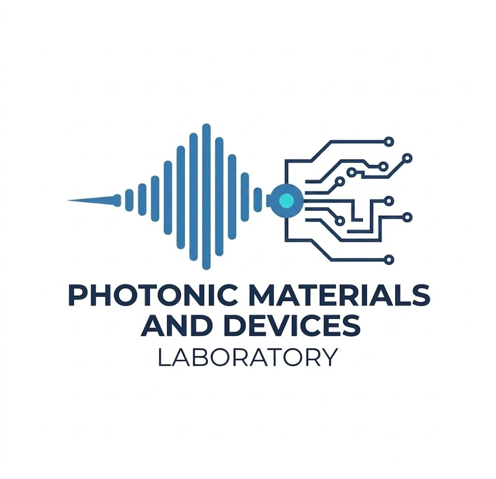

Department of Physics · NIT Calicut
Dr. Aji A.
Anappara
Professor · Photonic Materials and Devices Laboratory
National Institute of Technology Calicut, Kerala, India

BACKGROUND
About
Dr. Aji A. Anappara is a Professor in the Department of Physics at the National Institute of Technology Calicut. His research focuses on advanced functional materials, optoelectronic devices, and light–matter interactions, with an emphasis on translating fundamental science into practical technologies and patented innovations.
He completed his Ph.D. under the guidance of Prof. Dr. Alessandro Tredicucci at the NEST (National Enterprise for nanoScience and nanoTechnology), Scuola Normale Superiore, Pisa, Italy.
Following his doctoral studies, he was awarded a prestigious fellowship from the Alexander von Humboldt Foundation, where he worked with Prof. Alfred Leitenstorfer and Prof. Rupert Huber at the University of Konstanz.
He joined NIT Calicut in November 2010 as an Assistant Professor and is currently a Professor. He leads the Photonic Materials and Devices Laboratory, working at the interface of nanomaterials, optoelectronics, and ionotronic systems.
His work has resulted in high-impact publications, multiple patents (granted and filed), and externally funded research projects, reflecting a strong synergy between fundamental science and technological innovation.
EDUCATION
PROFESSIONAL EXPERIENCE
-
ProfessorNIT Calicut2022–Present
-
Associate ProfessorNIT Calicut2018–2022
-
Assistant ProfessorNIT Calicut2010–2018
-
AvH Postdoctoral FellowUniversity of Konstanz, Germany2008–2010
RESEARCH GROUP · Photonic Materials and Devices Laboratory
Research Overview
Our group operates at the interface of nanomaterials science, device physics, and light-driven chemical processes, specializing in low-dimensional material systems for next-generation optoelectronic, ionotronic, and neuromorphic technologies.


PEER-REVIEWED
Publications
41 publications in peer-reviewed journals (reverse chronological order)
INTELLECTUAL PROPERTY
Patents
2026
2025
2024
PHOTONIC MATERIALS AND DEVICES LABORATORY
Doctoral Students
ACADEMICS
Teaching
Join Our Research Group
Postdoctoral/Ph.D. positions:
Highly motivated and talented postdoctoral/doctoral aspirants are encouraged to reach out directly.
B.Tech/M.Tech/M.Sc. projects:
Interested students from NITC can contact the group leader to discuss possible project topics.
✉ Send an EmailGET IN TOUCH
Contact
Department of Physics, NIT Calicut
Kerala, India – 673 601
Join Our Research Group
We are always looking for highly motivated and talented researchers to join our group. We work on cutting-edge problems at the interface of nanomaterials, optoelectronics, and ionotronic systems at the Photonic Materials and Devices Laboratory.
Postdoctoral/Ph.D. positions:
Highly motivated and talented postdoctoral/doctoral aspirants are encouraged to reach out directly.
B.Tech/M.Tech/M.Sc. projects:
Interested students from NITC can contact the group leader to discuss possible project topics.